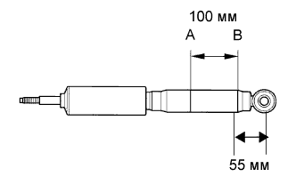

ЗАДНИЙ АМОРТИЗАТОР > СНЯТИЕ С ЭКСПЛУАТАЦИИ |
| 1. ПОДГОТОВЬТЕ ЛЕВЫЙ ЗАДНИЙ АМОРТИЗАТОР В СБОРЕ К УТИЛИЗАЦИИ |
Полностью выдвиньте шток заднего амортизатора.
|  |
С помощью дрели просверлите отверстие в цилиндре между точками А и В, показанными на рисунке, чтобы выпустить находящийся внутри газ.